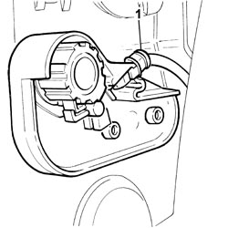
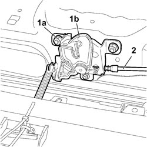
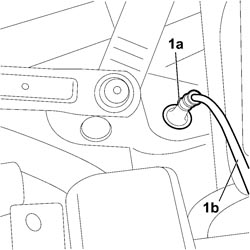

7025A28 BONNET LID OPENING CABLE - R R
- Path
- Procedures > 70 FITTINGS > 7025 COMPARTMENT COVERS > 7025A BONNET LID > 7025A28 BONNET LID OPENING CABLE - R R
- Kind
- repair procedure (removal / refitting; the operation number is the code)
- Applies to
- all engines; all production periods
- Interactive page
- https://sloeber94.github.io/elrnDB-fCrm/en/#/194000961
Applies to: all engines; all production periods
 Removing
Removing
 Refitting
Refitting- Open the bonnet.
- Turn the ignition key to the OFF position.
- Disconnect the negative battery terminal.
Description | Connector | |
|---|---|---|
BATTERY |
Working from inside the vehicle:
Op. 7025A24 BONNET LID OPENING LEVER - R+R
Op. 7040L39 LEFT FRONT DOOR COMPARTMENT SILL PLATE R R
Op. 7040A44 LEFT DASHBOARD SIDE TRIM - R.R.
Op. 7040A24 LOWER FACIA COVER TRIM - R+R
Op. 5505A35 MAIN BODY COMPUTER/JUNCTION UNIT - R.R.
1. Disconnect the bonnet release opening cable.

Applies to: all engines; all production periods
Working from the engine compartment:
Op. 7210E22 R.R. WINDSCREEN BASE TRIM
Op. 7040D30 ENGINE BAY FRONT BEAM COVER - R R
1. Mark the position of the lock, undo the fixing nuts (1a) and detach the lock (1b) from the crossmember.
2. Disconnect the bonnet release cable from the lock.

Applies to: all engines; all production periods
1. Release the cable duct seal (1a) from the engine compartment bulkhead and release the bonnet release cable (1b).
Then release the flexible cable from the mountings on the perimeter of the engine compartment and remove it from the vehicle.

Applies to: all engines; all production periods
Refitting
Removing- Introduce the flexible cable for the bonnet release through the bulkhead and fit the cable duct seal.
- Fit the bonnet release flexible cable on the mountings on the perimeter of the engine compartment.
- Connect the bonnet release cable to the lock.
- Position the lock correctly, ensuring that the marks made previously are aligned and tighten the fixing nuts.
Op. 7210E22 R.R. WINDSCREEN BASE TRIM
Op. 7040D30 ENGINE BAY FRONT BEAM COVER - R R
Working from inside the vehicle:
Op. 5505A35 MAIN BODY COMPUTER/JUNCTION UNIT - R.R.
Op. 7040L39 LEFT FRONT DOOR COMPARTMENT SILL PLATE R R
Op. 7025A24 BONNET LID OPENING LEVER - R+R
Op. 7040A44 LEFT DASHBOARD SIDE TRIM - R.R.
Op. 7040A24 LOWER FACIA COVER TRIM - R+R
- Connect the negative battery terminal.
Description | Connector | |
|---|---|---|
BATTERY |
Topics linked from this page (8)
- 5505A35 MAIN BODY COMPUTER/JUNCTION UNIT - R.R.
- 7025A24 BONNET LID OPENING LEVER - R+R
- 7040A24 LOWER FACIA COVER TRIM - R+R
- 7040A44 LEFT DASHBOARD SIDE TRIM - R.R.
- 7040D30 ENGINE BAY FRONT BEAM COVER - R R
- 7040L39 LEFT FRONT DOOR COMPARTMENT SILL PLATE R R
- 7210E22 R.R. WINDSCREEN BASE TRIM
- A001 BATTERY